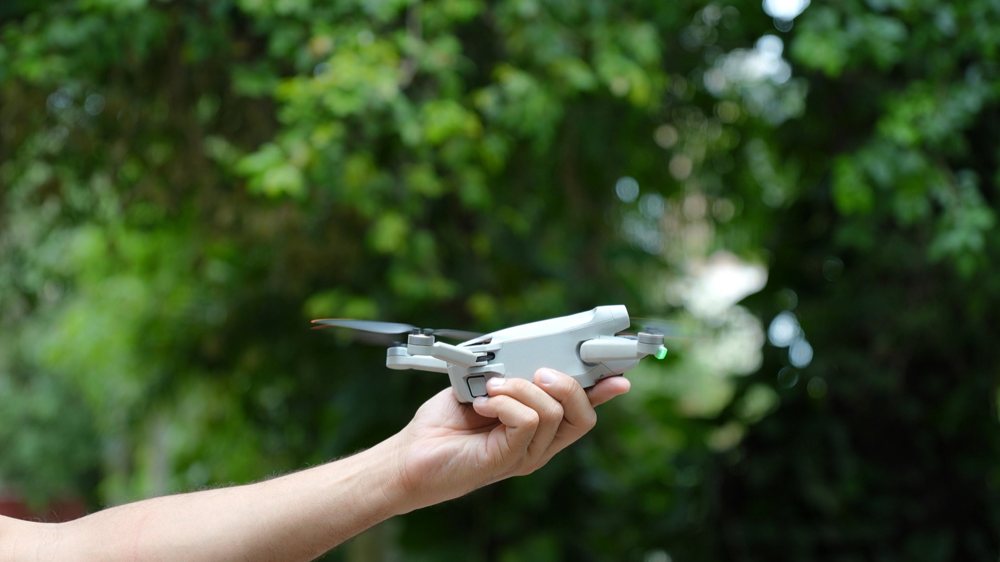

01 / LIFT OFF · Poster frames: Honye Sanges (desktop), Petkevich Evgeniy (mobile) / Pexels
Made to move the room.
All films ↗OUR APPROACH
See the whole story.
Aerial-led production connects people, places and possibilities. Ground-level camera work supports the larger story.
What we do ↗FEATURED WORK
Built for the bigger picture.
From the shape of a course to the character of a property, an elevated perspective reveals what still frames can miss.
View films ↗